Question: does skeletal 3D give a substantially better foundation for motion than the sprite system while still being able to look like Touchline?
One simulation (deterministic, zero RNG; commit tick 38, contact tick 62 = t 1.050 s, HAND · WEAK PARRY, execEnd tick 66) rendered three ways from the identical per-tick state. Simulation traces are hash-identical across backends (43/43 scenarios). Nothing was changed for this page: same clip, graph, IK and render options as committed. Sprite jersey/shorts/socks/gloves colours are matched on the 3D parts; no face, hair, kit or mesh polish was done on purpose.
Why v2 failed (measured before anything was changed): the load lasted one tick (pelvis 0.85 → 0.79 m, ~1 px of silhouette change at gameplay scale) because the anticipation blended toward a shallow load and the launch position took over immediately; the "settle" was a kneel at 0.50 m pelvis height, which reads as standing; and the get-up was a lerp from that kneel to SET. v3 replaces those with authored, measurable phases (all numbers below are from the per-tick trace of this capture, trace): set crouch on the shooter's wind-up (pelvis 0.85 → 0.72 m, hips/knees/ankles flexing, feet planted) → REACT → WEIGHT SHIFT onto the save-side foot → DEEPEST LOAD tick 39: pelvis 0.58 m, save-side knee 56°, torso leaning into the dive, opposite leg unloading → PLANT → PUSH-OFF 43–46: hip → knee → ankle → toe extension with the foot held on its plant point; pelvis 0.63 → 1.10 m while the foot is still on the pitch; heel lifts, toe is the last contact; LAST GROUNDED FRAME = tick 46, first airborne = 47 → flight → CONTACT tick 62 (glove 4.9 cm from the simulation hand, unchanged) → FOLLOW-THROUGH → DESCENT (ballistic, pelvis 1.51 → 0.94 m) → FIRST GROUND CONTACT tick 89 (feet: the body axis is 22° from vertical on this ball, so the feet touch first) → IMPACT (knees collapse) → ABSORB (hip to the pitch, hand braces from tick 101) → SETTLED ticks 113–136: pelvis 0.28 m, head 0.29 m, both feet and both hands on the pitch → BRACE (hands set, torso lifts) → PUSH TORSO UP on the arms → DRAW KNEE UNDER → HALF-KNEEL (front foot planted toward the simulation root, kneeling foot released as the kneel takes over) → CROUCH → RISE → SET tick 245 (presentation root back on the simulation root: 0.000 m). Presentation facing is frozen for the whole action (v2 swung the lying keeper round when the sprite resolver dropped its commit snapshot). Nothing in the simulation changed: gates below.
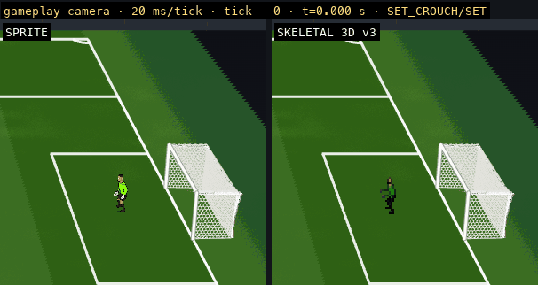
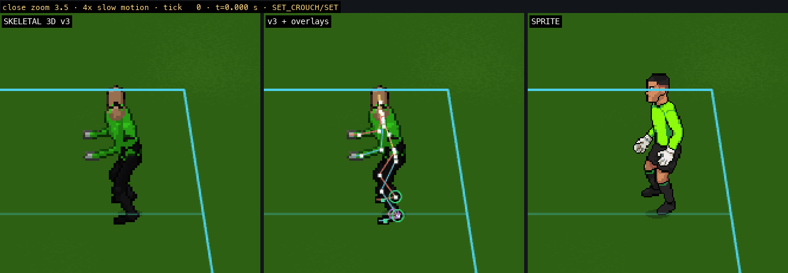
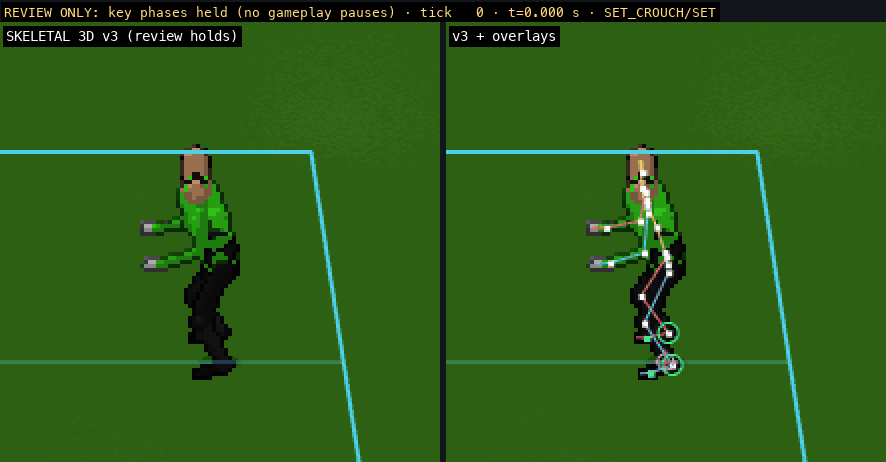

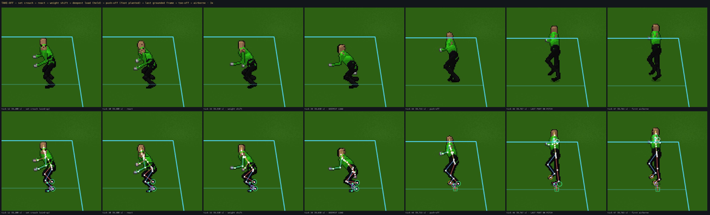
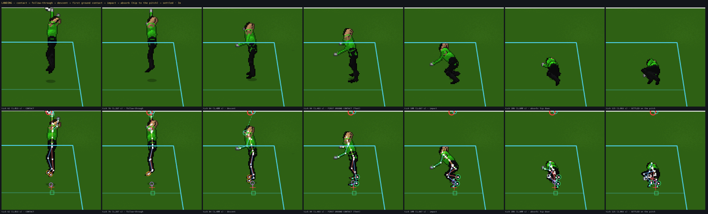
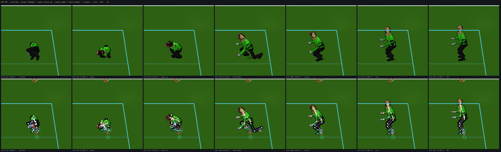

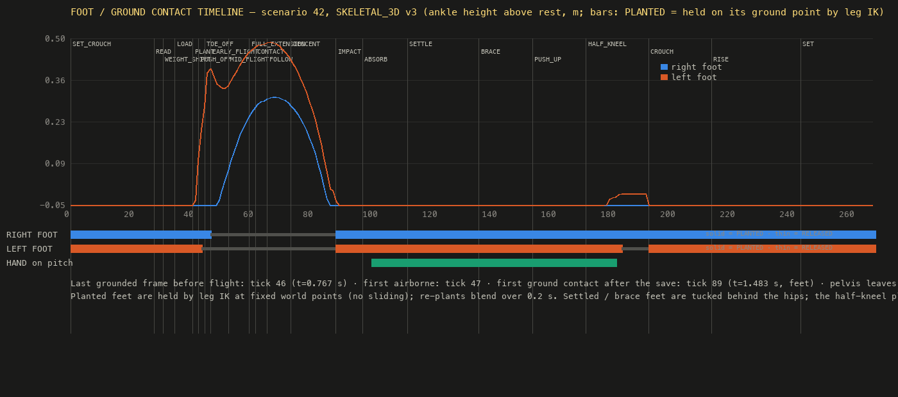
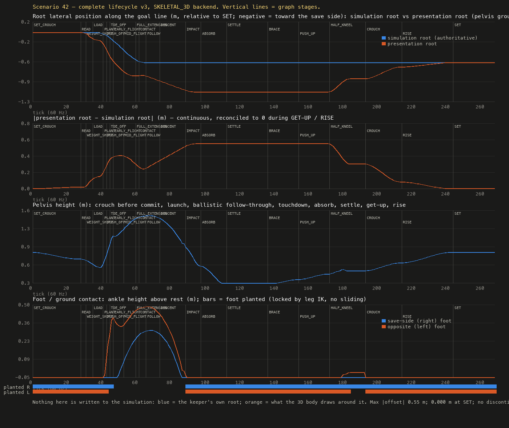
| acceptance (checked frame by frame on these captures) | knees visibly bend before take-off (set crouch → load, knee 56° at tick 39) ✔ · pelvis visibly drops (0.85 → 0.58 m, 21 px at close zoom, 5 px at gameplay scale) ✔ · planted leg visibly extends to launch (43–46, foot held on the pitch while the pelvis rises 0.47 m) ✔ · recognisable last grounded frame (tick 46, on the toe; overlay ring turns orange at 47) ✔ · keeper visibly descends after contact (66 → 89) ✔ · visibly contacts and settles on the pitch (feet 89, hip down by 108, settled 113–136 with head at 0.29 m) ✔ · visibly braces and gets up (hands on the pitch 101–182, torso up on the arms, knee under, half-kneel, crouch, rise) ✔ · no airborne/grounded → SET teleport (every stage boundary blends; largest pelvis step outside the push-off and the impact is 3 cm) ✔ |
|---|---|
| neutrality | sprite vs SKELETAL_3D, all 43 scenarios × 260 ticks, keeper drawn every tick: 43/43 identical (table) · animation OFF vs 3D ON: 43/43 identical (table) · scenario 42: commit tick 38, contact tick 62 (t 1.050 s), HAND · WEAK PARRY, contact point, ball and simulation root unchanged (simulation root 101.99/33.99 → 101.99/33.45 is the simulation's own dive travel, identical on both backends) |
| foot diagnostic | "RIGHT FOOT: PLANTED/RELEASED · LEFT FOOT: PLANTED/RELEASED" is drawn on the 3D backend's label (debug label on) and in the player readout above; PLANTED = the foot is held on its world plant point by leg IK (no sliding), RELEASED = the foot follows the authored leg. Last grounded frame before flight: tick 46; first ground contact after the save: tick 89 |
| root contract | simulation root untouched; presentation root = ground projection of the solved pelvis; offset 0 at SET, grows through the lean/load (0.15 m at the deepest load, from the torso lean), 0.39 m at toe-off, 0.55 m while settled (the body lies where the momentum took it), reconciled to the simulation root only through the half-kneel (front foot planted toward it) → crouch (both feet under it) → rise; 0.000 m at the final SET. No sliding: feet move only by re-plants blended over 0.2 s |
| known limits (v3) | capsule mannequin, no face/kit/hair on purpose; the settled pose on this feet-first ball is a curled heap (hip and shoulder down, knees folded) rather than a full side-lying stretch — the side-landing branch (axis > 60°) is authored but not exercised by this ball; a 3 cm knee-under bump remains at ticks 179–181 (under one gameplay pixel); push-off peak pelvis speed ≈ 6 m/s over four ticks (explosive, on the high side); landing / get-up timings are global constants |
Same scenario 42, same simulation trace (gate: 43/43 scenarios identical sprite vs 3D, and animation OFF vs ON — see §v2·9). The dive/contact work is unchanged (glove 4.9 cm from the simulation hand at tick 62). New: anticipation inside the simulation's reaction latency (react → weight shift → crouch/load, feet planted by leg IK), plant → push-off → toe-off (on the toes) → flight, and after contact a physics-driven landing (ballistic follow-through, descent, first ground contact at standing height, absorb, settle to a knee with the hand braced — the body axis on this ball is 22° from vertical, so it lands on the feet), get-up (push up, knees under, crouch), rise, ready stance. Presentation root = ground projection of the pelvis, continuous, reconciled to the simulation root during the get-up. Cubic key interpolation throughout.
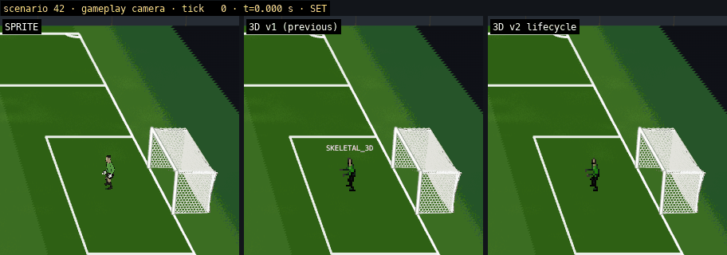
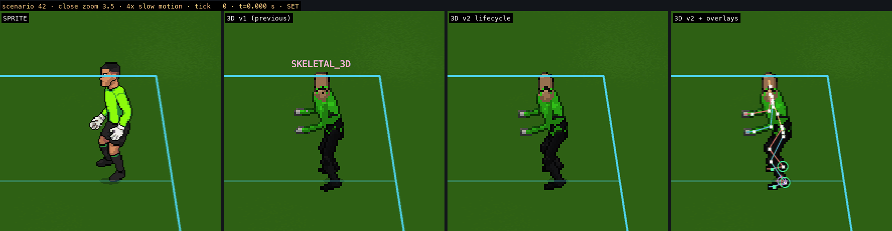
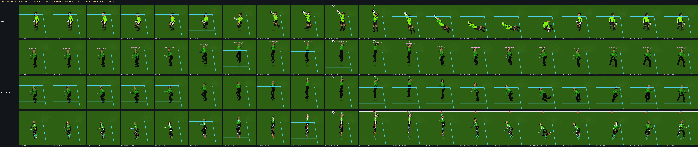
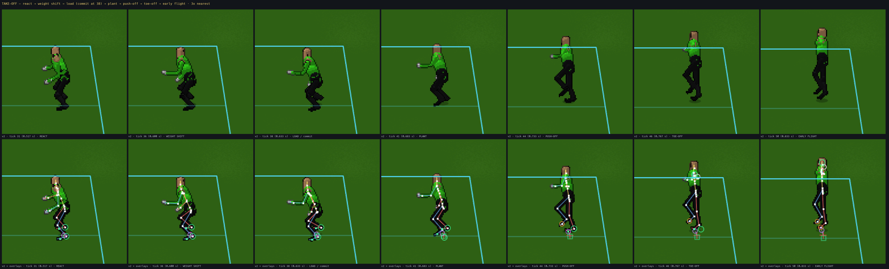
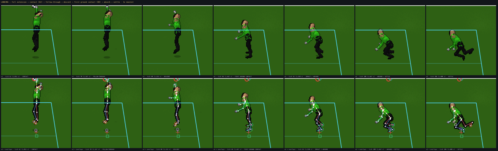
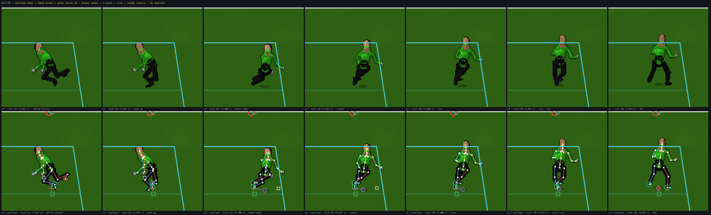
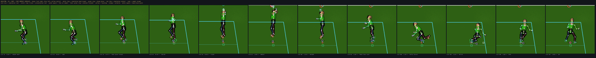
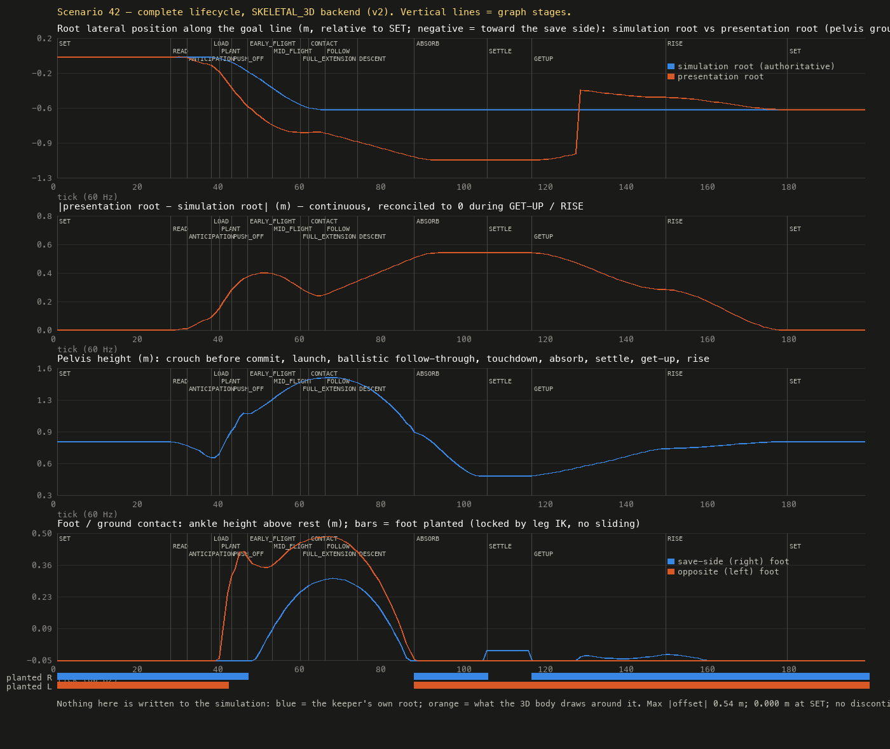
| neutrality | sprite vs SKELETAL_3D, all 43 scenarios × 200 ticks, backend drawn every tick: 43/43 identical (table) · animation OFF vs ON: 43/43 identical (table) · commit tick 38, contact tick 62, outcome WEAK PARRY, contact point, ball and simulation root unchanged |
|---|---|
| contact | glove centre 4.9 cm from the simulation hand at tick 62 (previous slice: 4.7 cm) |
| continuity | presentation-root offset: 0 at SET, ≤ 0.54 m, 0 again at the final SET; no discontinuity at any stage boundary (plot above); feet locked by leg IK through anticipation / load / plant / push (release over the toe-off), both feet re-locked at touchdown, front foot through the settle, both through get-up and rise |
| skeleton / skinning | the capsule parts are a stand-in, not an architectural requirement: the 23-bone skeleton (root → pelvis → spine → chest → neck → head; clavicle/upperArm/foreArm/hand ×2; thigh/shin/foot/toe ×2) is driven by rotation-only clips + a pelvis translation; a skinned humanoid mesh binds with skelInverseBind() / skelSkinMatrices() (bind = zero pose at the character's height); part material groups map to mesh material slots (kit, gloves, boots, skin, hair). Two things to keep in mind for real meshes, neither blocking: no twist bones (forearm/thigh twist) and the hair "bone" would become a mesh attachment |
| known limits (v2) | capsule mannequin (no face/hair/kit detail on purpose); the side-landing branch (body axis > 60°) is authored but not exercised by this ball; the get-up's step back toward the simulation root is a solved reach, not a stepped walk; landing sub-timings are physics constants, not tuned per keeper |
Panels: CURRENT SPRITE · SKELETAL 3D normal stylised (1/1, outline) · SKELETAL 3D pixel/2.5D (1/2, outline, preferred) · (close zoom only) pixel + overlays. Frames are the headless captures used everywhere else on this page; the player just steps them in lock-step. Keys: space = play/pause, ← → = step.
Normal speed: every tick, 20 ms frame delay (50 fps — the fastest GIF delay browsers honour; use the player above for exact 60 fps). Slow motion: every tick at 15 fps = 4× slower than real time.
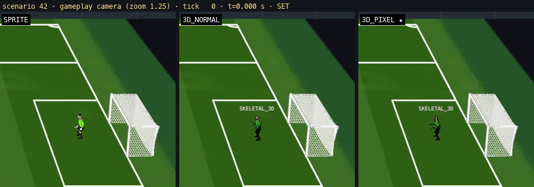
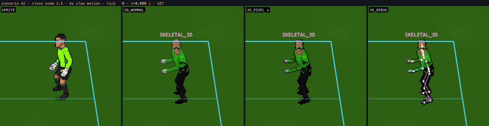
SET → LOAD → PLANT → PUSH → FLIGHT → CONTACT → LAND → RECOVER → SET. Phase names are the 3D graph's; "PLANT" is the plant-foot lock window inside LOAD/PUSH (ticks 38–47). The sprite row plays the baked RIGHT_FAR sequence and the DIVE_NORTH contact still (flagged WRONG_CLIP by its own metric on this case).
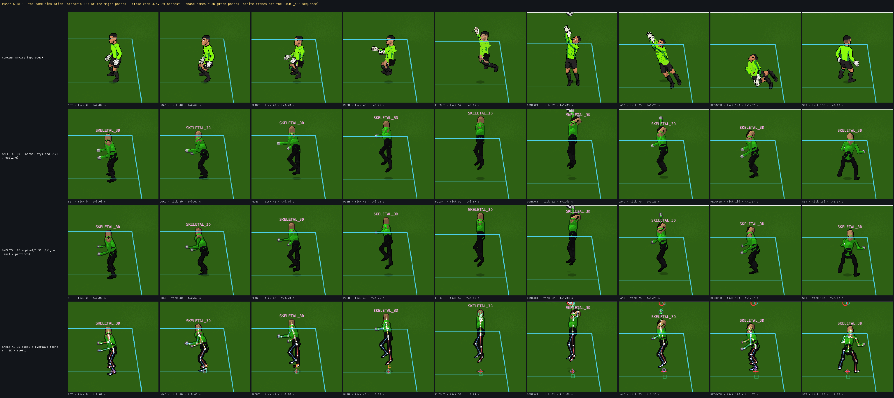
Drawn glove vs simulation hand at the contact tick: sprite 38 sprite-px residual (placement capped at 12 px) · 3D 4.7 cm (2.6 screen px at zoom 3.5). The 3D body axis is solved from the committed target (22° from vertical → jump-tip, lands on the feet); the sprite plays a generic lateral far dive and lands on its side.
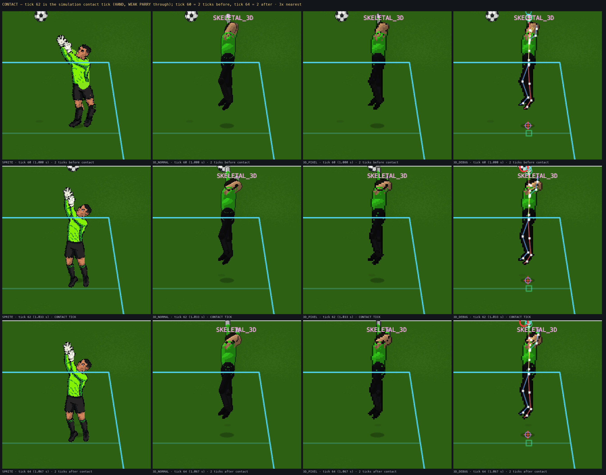
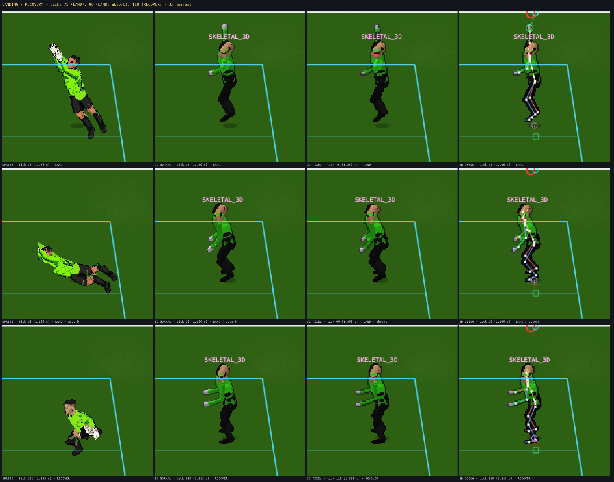
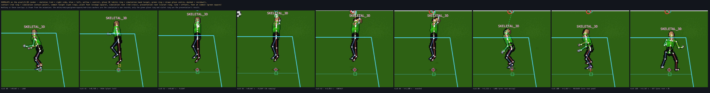
Root contract in numbers (same scenario): simulation root travels 0.57 m during the dive and is never written; presentation offset is 0 until execEnd, peaks 0.37 m at tick 99, is 0 again at tick 129 (SET).
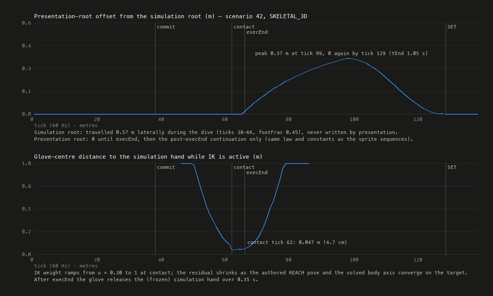
★ PREFERRED: 1/2 + outline — closest texel density to the sprite art at gameplay zoom, silhouette still readable at ~35 px tall. 1/1 = smoother "3D medium" look (shown as the "normal stylised" column everywhere above); 1/3 breaks limbs apart at gameplay size. Option C (character-space fixed texel size) is wired but was not evaluated and is not shown.
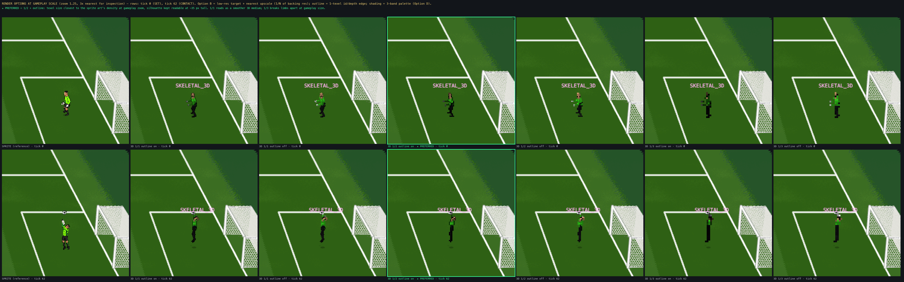
| judge | motion foundation: phases driven by the simulation's u / contact tick, glove on the simulation hand, body axis from the committed geometry, landing consistent with the action, root contract; and whether the pixel render still reads as Touchline next to the sprites at the real camera |
|---|---|
| do not judge yet | capsule "part" meshes, hand-set keys authored in one pass, no face/hair/kit detail, only the far-dive trunk authored (other families fall back to SET + procedural reach), no footwork clip, side-landing blend not reviewed on a lateral case |
| evidence | PROTOTYPE_FINDINGS.md · gate comparison (43/43 identical) · architecture audit |